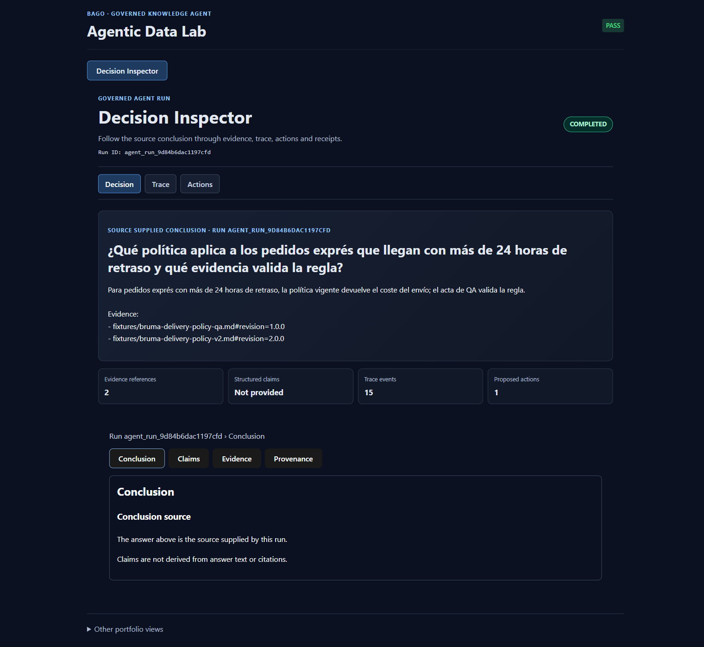
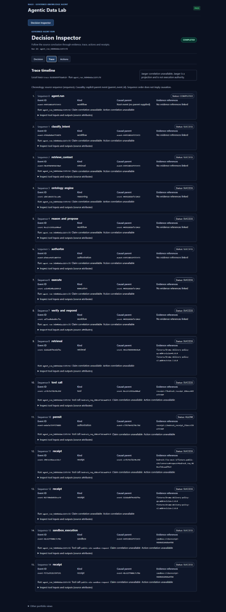
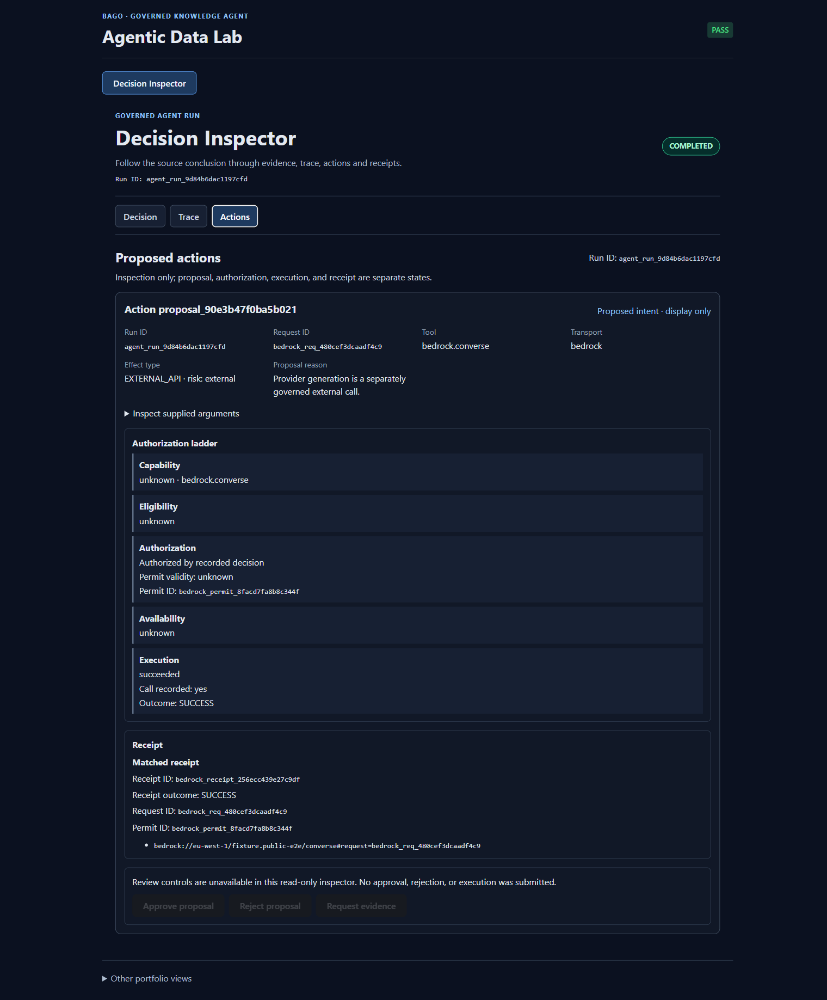
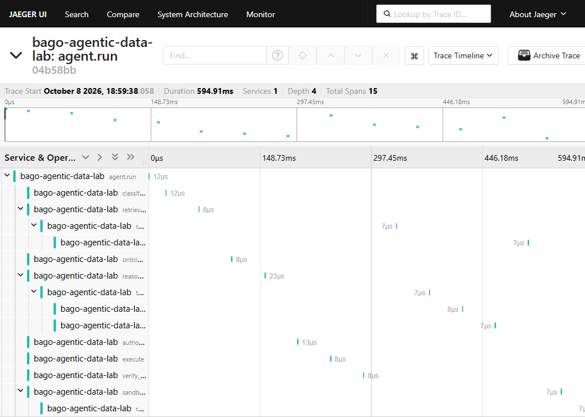

INICIO
Manual 01 · edición 1.3 · 15 octubre 2026
Guía para inspeccionar una ejecución del laboratorio, seguir su LocalTrace y revisar propuestas y recibos.
scripts\run-local-ui.ps1
Ejecuta el comando desde la raíz del repositorio. El launcher compila la interfaz, inicia la API local y abre la aplicación. Selecciona un puerto libre entre 8080 y 9000; usa la dirección que abre el propio launcher. Para dependencias, consulta docs/agent-chat-control/LOCAL_SETUP.md.
En la barra lateral, elige Inspect y después Decision Inspector. La interfaz es de solo lectura: no autoriza ni ejecuta acciones. Si no hay paquete de evidencias, indica que falta; no inventa una ejecución.
portfolio/README.md para la demo gobernada.
Captura de referencia validada el 8 de octubre de 2026; puede diferir de la interfaz actual.
01 · OBSERVAR
Identifica el run antes de interpretar la respuesta.
Anota el run_id, la pregunta, la respuesta fuente y el estado de la ejecución.
Los contadores resumen referencias de evidencia, claims estructurados, eventos de traza y acciones propuestas. Una referencia recuperada dice que un documento o fragmento se consultó; no demuestra por sí sola una frase de la respuesta.
La interfaz no extrae claims del texto ni deduce relaciones claim-evidencia. En Conclusion, Claims, Evidence y Provenance, comprueba qué datos proporcionó la fuente. Si falta la revisión o snapshot, la frescura no queda establecida.
02 · SEGUIR
Orden y causalidad son datos distintos.
Abre Trace en el inspector. Revisa el trace_id, el run_id, la secuencia de eventos y las referencias registradas.
La secuencia indica orden. Solo un parent_event_id informado por la fuente expresa una relación padre-hijo; no infieras más causalidad.
| Identificador | Qué identifica |
|---|---|
run_id | La ejecución del agente. |
LocalTrace trace_id | El registro local de eventos. |
| Jaeger Trace ID | La traza que consultó Jaeger local; puede ser distinto. |
La interfaz no enlaza automáticamente el ID de Jaeger con el trace local. Si un dato falta, anótalo como no proporcionado.

Captura de referencia del 8 de octubre; IDs y eventos cambian entre ejecuciones.
03 · COMPROBAR
Permiso, ejecución y resultado necesitan evidencias distintas.
Un permiso ALLOW no demuestra ejecución. Un SUCCESS sin recibo asociado no basta para verificar el resultado. El inspector asocia recibos solo si su run_id explícito coincide con el del agente. Un recibo sin identidad o de otro run queda sin verificar.
run_id es una comprobación de identidad declarada por la fuente; no es una firma criptográfica.
Captura de referencia del 8 de octubre; consulta los IDs y estados de la ejecución abierta.
04 · LOCALIZAR
Jaeger proyecta observabilidad; LocalTrace conserva la evidencia de eventos.
Se necesita Docker para reproducir la validación local documentada:
docker compose -p bago-otel -f infra/observability/docker-compose.yml up -d python scripts/run_l15_otel_live_validation.py --check
Abre http://localhost:16686 y busca el Trace ID que imprima la ejecución actual. No reutilices el ID de una captura anterior. Al terminar, puedes detener Jaeger:
docker compose -p bago-otel -f infra/observability/docker-compose.yml down

Captura histórica de Jaeger. El grafo y los identificadores variarán al repetir el flujo.
05 · PRACTICAR
Escribe conclusiones que se sostienen en los datos.
run_id y estado de la ejecución.trace_id, eventos y relaciones padre informadas.run_id del recibo y el del agente.docs/agent-chat-control/LOCAL_SETUP.md.Claim: afirmación estructurada de la fuente. Evidencia: referencia a documento o fragmento consultado. LocalTrace: registro local de eventos. Span: operación en la traza de Jaeger. Recibo: registro del resultado declarado por una operación.
Edición 1.3 actualizada con el código y la documentación del repositorio a 15 de octubre de 2026. La aplicación y Jaeger no estaban activos durante la actualización, por lo que las capturas siguen siendo referencias del 8 de octubre. Esta guía no certifica una nueva ejecución ni disponibilidad remota.